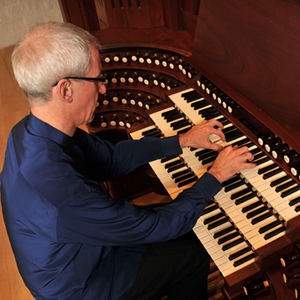

Music · Recordings
Explore recordings spanning seven centuries of organ and harpsichord literature — from Bach to Puccini.
Featured Recordings
Puccini — Organ Sonata No. 6
Recorded at Madonna della Strada Chapel, Chicago
Puccini — Organ Sonata No. 7
Recorded at Madonna della Strada Chapel, Chicago
Bach — Toccata & Fugue in D minor
BWV 565 · Performed on the Flentrop Organ
Free Improvisation in C minor
Live at Rockefeller Memorial Chapel, Chicago
Couperin — Pièces de Clavecin
Book II · Selection of Ordres
Buxtehude — Passacaglia in D minor
BuxWV 161 · Historical performance practice

Live Performances
Kloeckner's live performances are known for their interpretive depth and improvisational brilliance — each concert a singular event shaped by the instrument, the space, and the audience.
Book a Performance →